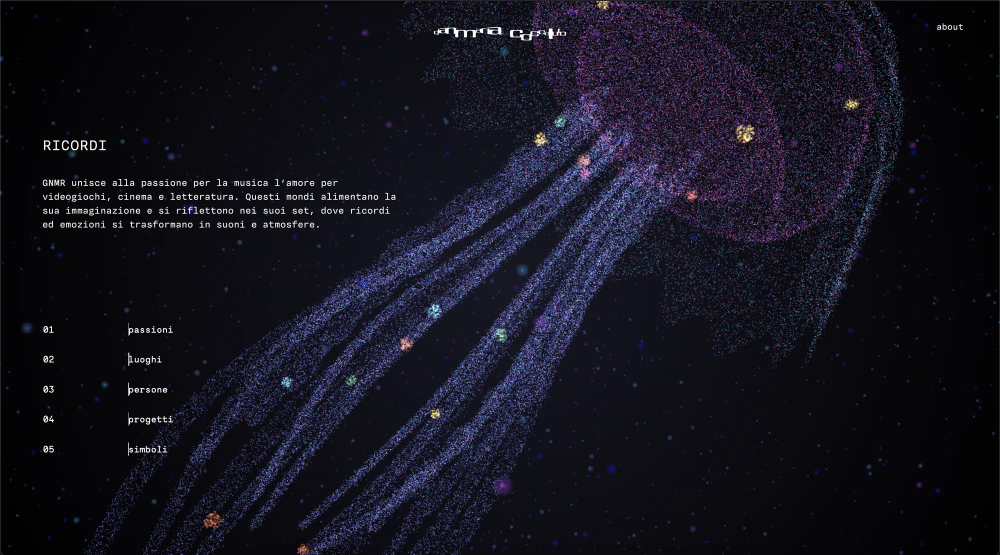
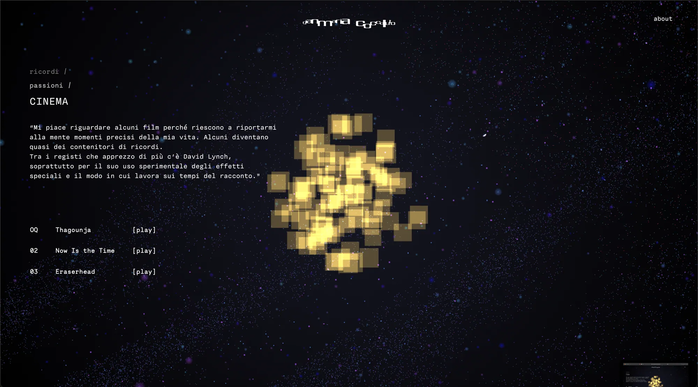
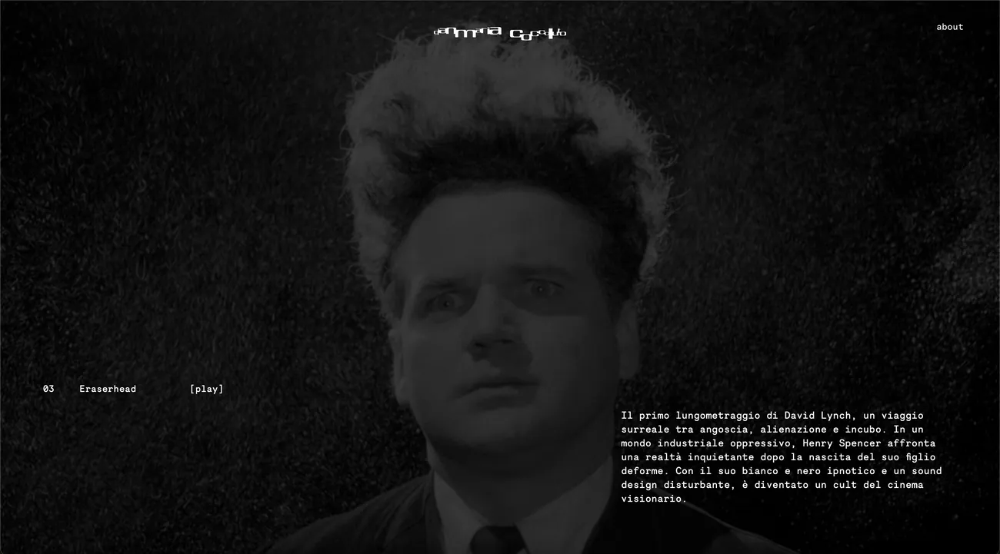
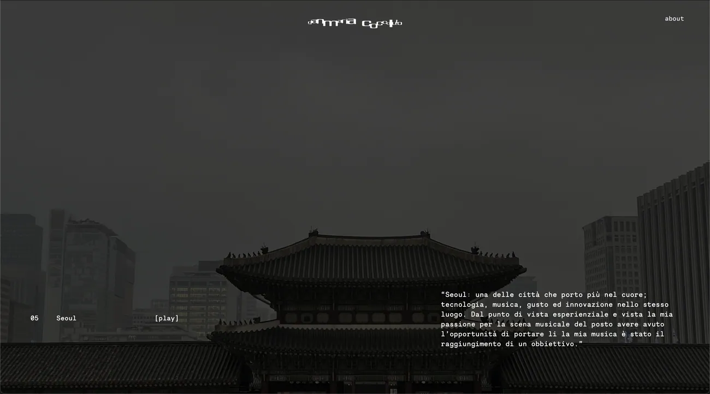
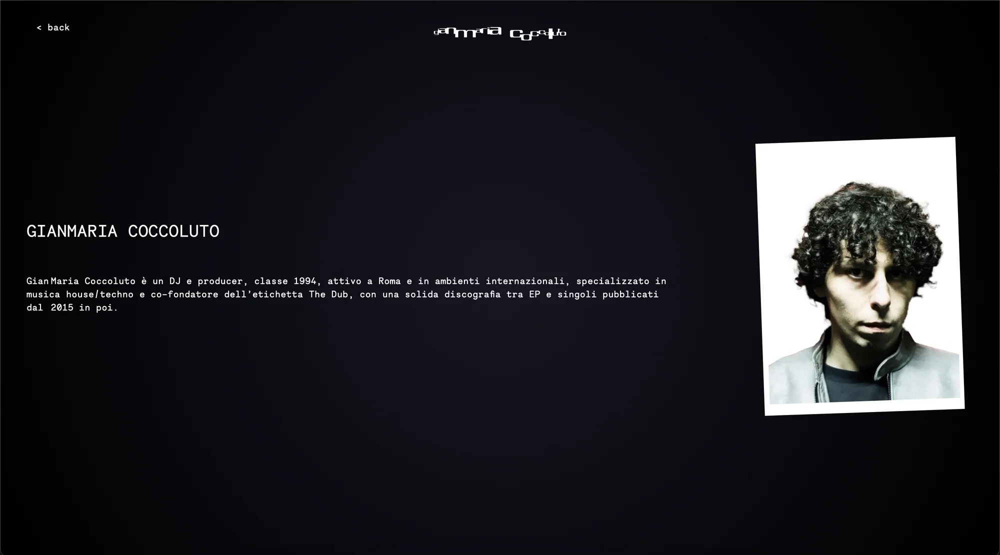
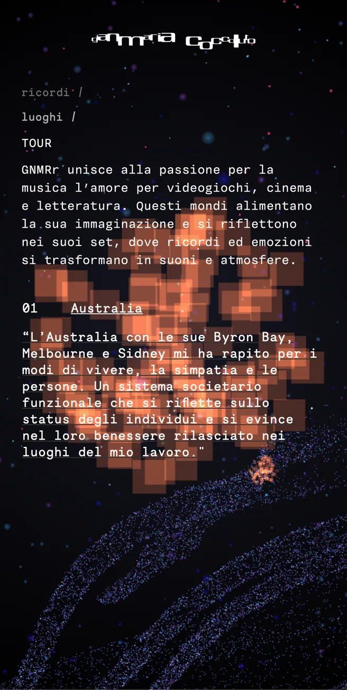
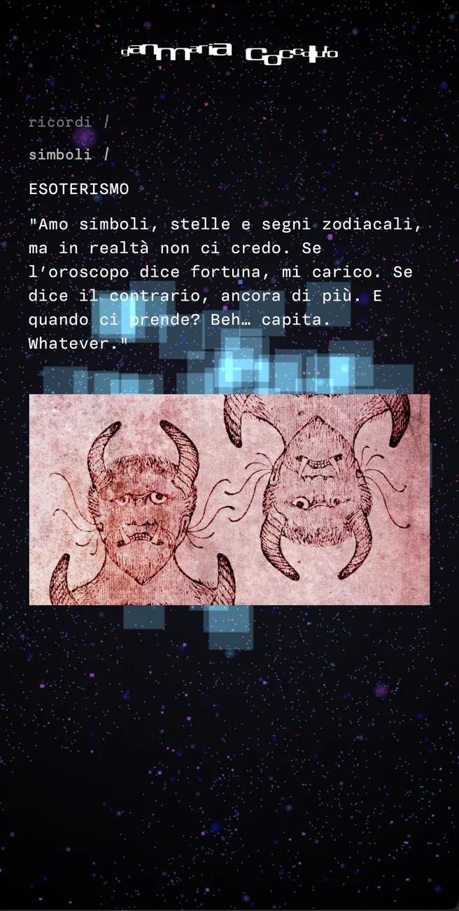
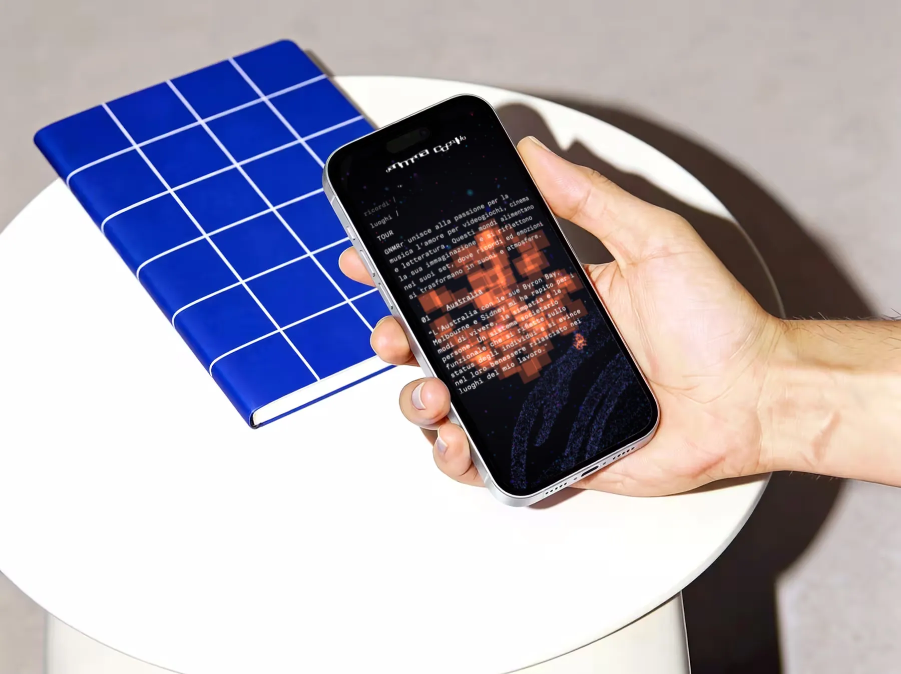
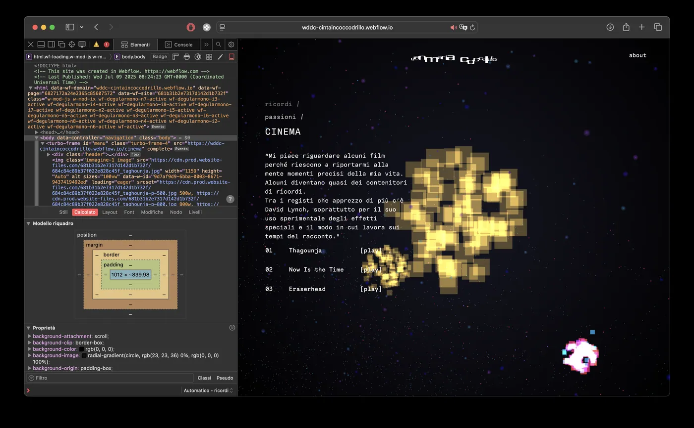

Sound Morphology
Sound Morphology è un’esperienza web sperimentale che risponde alla sfida di creare uno spazio digitale per l’identità di un artista, costruendo un archivio intimo e immersivo a 360 gradi per GNMR (Gianmaria Coccoluto), DJ e producer romano.
Sound Morphology is an experimental web experience that takes on the challenge of creating a digital space for an artist’s identity, building an intimate, immersive 360° archive for GNMR (Gianmaria Coccoluto), a DJ and producer from Rome.
Si tratta di un viaggio dentro ad un ecosistema che mappa l’intera costellazione della sua vita: dalla discografia alle tappe dei tour, fino alle radici della sua ispirazione, intrecciando legami personali e reference visive dal mondo del cinema e dei videogiochi.
It is a journey through an ecosystem that maps the whole constellation of his life: from his discography and tour stops to the roots of his inspiration, weaving together personal connections and visual references from film and video games.
L’utente può scendere in profondità in modo analitico, filtrando un menù testuale fino all’unità minima del ricordo, oppure abbandonarsi a un’esplorazione visiva e spaziale attraverso la rappresentazione di una medusa composta da migliaia di particelle luminose.
Users can dig deep analytically, filtering a text menu down to the smallest unit of memory, or let themselves drift through a visual, spatial exploration of a jellyfish made of thousands of glowing particles.
Simbolo vitale per l’artista, la medusa funge sia da ambiente immersivo che da reale mappa di navigazione. Interagendo con essa, l’esperienza utente diventa l’eco visiva della musica di GNMR: un’onda morbida, fluida e carica di energia.
A vital symbol for the artist, the jellyfish works both as an immersive environment and as an actual navigation map. Through it, the user experience becomes the visual echo of GNMR’s music: a soft, fluid wave, charged with energy.









Sound Morphology
Web designWeb design
2025
Politecnico di MilanoPolitecnico di Milano
- Allen Jonathan Marco
- De Sensi Aurora
- Micucci Mattia
- Salvi Alessandro
- Villa Eleonora
- CodingCoding
- User interfaceUser interface
- UXUX